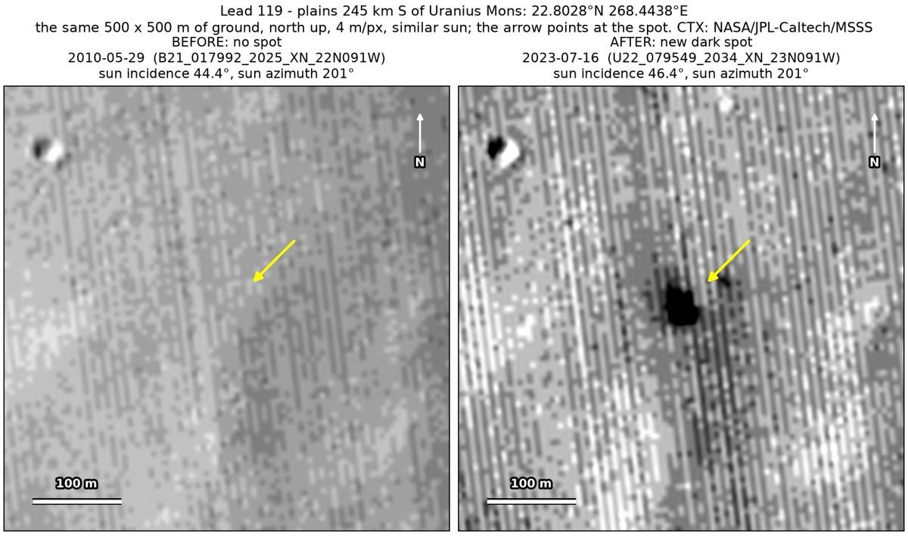
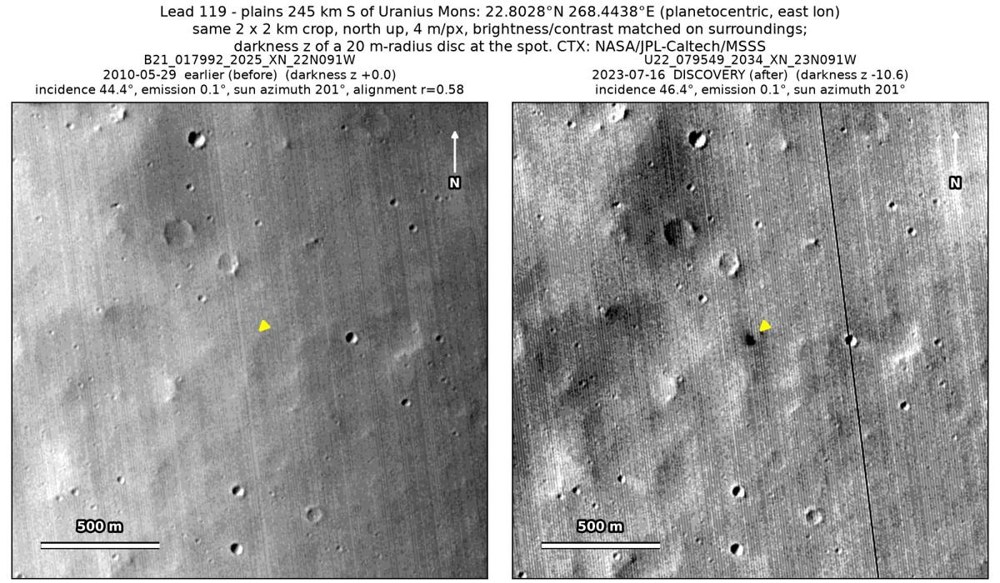
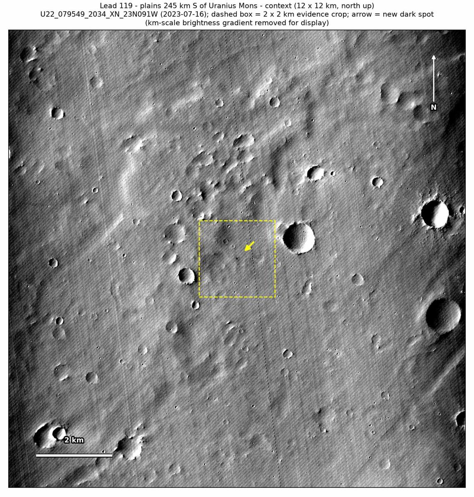

Professor of Mathematics
Paata Ivanisvili
Department of Mathematics, University of California, Irvine

← Possible new impact sites on Mars
Candidate 119: Plains 245 km south of Uranius Mons
Promising · roughly 55%

What changed. A compact dark spot about 35 m across appeared on plains 245 km south of Uranius Mons between May 2010 and July 2023, and is seen in one CTX image so far.
Why it may be a new impact. The only earlier image, of May 2010, taken under almost the same sun as the July 2023 image, shows no spot there. The aligned before-and-after difference is deepest at the spot, with no other new dark mark and no tracks in the surrounding 5 × 5 km, and a compact new dark spot like this is how the blast zone of a small new crater looks.
- Location
- 22.803° N, 268.444° E (91.556° W)
- Absent
- 29 May 2010
- Present
- 16 July 2023
- Size
- Compact dark spot about 35 m across (32 × 38 m)
- Confidence
- Promising candidate: roughly 55% likely to be a new impact.
- Caveat
- Only one image shows it, so an image defect cannot be fully ruled out, although the spot is a smooth dip about 6 × 7 image pixels across; a later image, of August 2023, ends a few hundred metres east of it and does not cover it. The only earlier image is softer, and the dark feature nearby used as a check is faint in it, so it does not show that the image would have caught a spot. No image from the high-resolution HiRISE camera covers it; the nearest ends 38 km away. Like every candidate here, it is unconfirmed: see the caveat.

